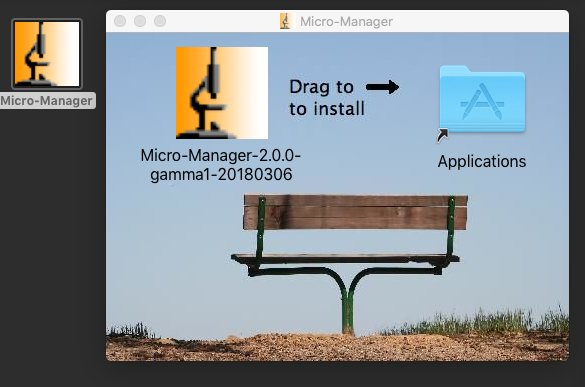
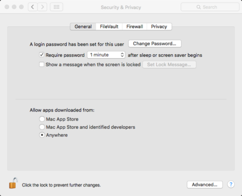
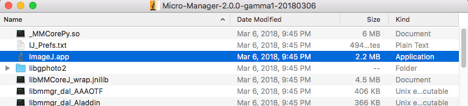

Download latest build of μManager 2.0-gamma
Double click to open the disk image
Before running, go to > System Preferences > Security & Privacy, click the lock, provide your password, Allow apps downloaded from Anywhere.
Copy to Applications or run from disk image
Open Micro-Manager folder, start the ImageJ.app
Problems? Check ImageJ instructions